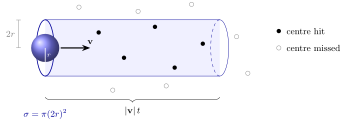
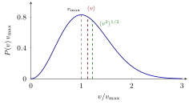
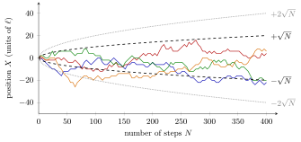
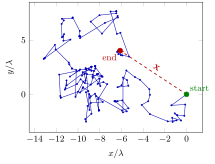
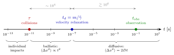
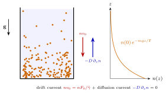
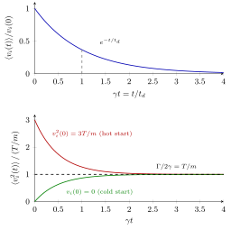
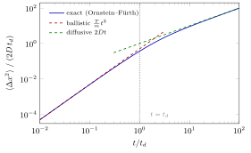
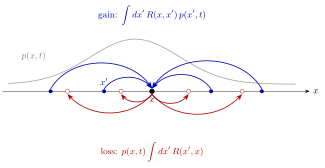

1 Random walks, Brownian motion and the Langevin equation
A grain of pollen in water jiggles forever, along a path so irregular that no two observations ever repeat. Behind that jiggling lies one of the founding ideas of nonequilibrium statistical physics: the macroscopic laws of transport (diffusion, friction, viscosity) emerge from an enormous number of microscopic collisions that we can neither follow nor predict, and the only sensible description is a statistical one. This chapter builds that description step by step. We start from the kinetic theory of a dilute gas (how often do molecules collide, and how far do they fly?), turn the sequence of collisions into a random walk and find the diffusive law \(\langle X^2\rangle \propto t\). We then follow Einstein’s argument for Brownian motion, whose key ingredient is a separation of time scales, and Langevin’s reformulation as a Newton equation with a random force, which yields the first example of a fluctuation–dissipation relation. We close by changing perspective — from trajectories to probabilities — and writing the master equation that Chapter 2 will turn into the Fokker–Planck equation.
1.1 Complexity, emergence and the need for statistics
A mole of gas contains \(N_A \simeq 6.022\times 10^{23}\) molecules. Even if Newton’s laws for each of them were known exactly, the initial conditions are not, and tiny uncertainties are amplified by every collision. Yet the collective behaviour is extremely regular: pressure, temperature, viscosity and diffusion constants are reproducible numbers. This is the archetype of an emergent property: a law that holds at the macroscopic scale, is insensitive to most microscopic details, and is invisible in the equations of a single constituent.
Two ideas recur throughout the course.
- Separation of scales. Microscopic events (collisions) happen on time and length scales much shorter than the ones on which we observe the system. Averaging over the fast scales leaves an effective, often stochastic, dynamics for the slow ones.
- From trajectories to distributions. Following Boltzmann, instead of individual trajectories we describe the evolution of a probability distribution. Randomness is not a statement about the underlying mechanics, but an effective (and remarkably successful) way of encoding everything we choose not to resolve.
Historically, these ideas met fierce resistance: they presupposed the atomic hypothesis when there was no direct evidence for atoms, and they seemed to clash with the time-reversibility of mechanics. Brownian motion — and Perrin’s measurements built on Einstein’s theory — is precisely what settled the question of the existence of atoms.
1.2 Kinetic theory of the ideal gas
The simplest mechanical model of a thermodynamic system is Boltzmann’s ideal gas: \(N\) identical hard spheres of mass \(m\) and radius \(r\) in a volume \(V\), with number density \(n = N/V\). The gas is dilute: the typical inter-particle distance is much larger than the particle size, \[\delta = n^{-1/3} \gg r .\] For hydrogen at room temperature and atmospheric pressure, \(\delta \sim 10^{-8}\,\mathrm m\) while \(r\sim 10^{-10}\,\mathrm m\). Between collisions particles move on straight lines at constant velocity; collisions are binary (triple collisions are negligibly rare) and elastic (momentum and kinetic energy are conserved).
1.2.1 Collision rate and mean free path
How often does a given molecule collide? A sphere of radius \(r\) moving at velocity \(\mathbf v\) hits every other sphere whose centre comes within a distance \(2r\) of its own centre. In a time \(t\) it therefore sweeps a cylinder of base \[\sigma = \pi (2r)^2 = 4\pi r^2 \qquad\text{(collision cross section)}\] and height \(|\mathbf v|\, t\). Treating the targets as momentarily at rest, the number of collisions is the number of centres in that cylinder: \[N_{\mathrm{coll}} = n\,\sigma\,|\mathbf v|\,t .\]

Figure: the collision cylinder. A molecule hits every other molecule whose centre lies within \(2r\) of its path, i.e. inside the cylinder of cross section \(\sigma=4\pi r^2\) swept in time \(t\). The expected number of hits is \(n\sigma|\mathbf v|t\).
The collision rate is \(N_{\mathrm{coll}}/t = n\sigma|\mathbf v|\), and the mean time between collisions is its inverse. To get a number, replace \(|\mathbf v|\) with its thermal average \(\langle v\rangle\) computed with the Maxwell distribution of speeds, \[P(v) = \frac{4}{\sqrt\pi}\left(\frac{m}{2T}\right)^{3/2} v^2 \exp\!\left(-\frac{m v^2}{2T}\right),\] whose three characteristic speeds are \[v_{\max} = \sqrt{\frac{2T}{m}}, \qquad \langle v\rangle = \sqrt{\frac{8T}{\pi m}} = \frac{2}{\sqrt\pi}\,v_{\max}, \qquad \langle v^2\rangle^{1/2} = \sqrt{\frac{3T}{m}} = \sqrt{\tfrac32}\,v_{\max}.\]

Figure: the Maxwell distribution of molecular speeds, with \(v_{\max} < \langle v\rangle < \langle v^2\rangle^{1/2}\). The \(v^2\) factor is the phase-space volume of a spherical shell; the Gaussian factor is the Boltzmann weight of the kinetic energy.
The mean collision time \(\tau\) and the mean free path \(\lambda\) (average distance flown between two successive collisions) are, in the approximation of immobile targets, \[\tau = \frac{1}{n\sigma\langle v\rangle}, \qquad \lambda = \langle v\rangle\,\tau = \frac{1}{n\sigma}.\]
The targets are not at rest, however. What matters is the relative velocity \(\mathbf v_r = \mathbf v_1 - \mathbf v_2\) of the two colliding molecules. Each Cartesian component of \(\mathbf v_{1,2}\) is Gaussian with variance \(T/m\), and the difference of two independent Gaussians is Gaussian with the sum of the variances, \(2T/m\). Hence \(\mathbf v_r\) is Maxwell-distributed with \(m \to m/2\), \[P_r(v_r) = \frac{4}{\sqrt\pi}\left(\frac{m}{4T}\right)^{3/2} v_r^2\exp\!\left(-\frac{m v_r^2}{4T}\right), \qquad \langle v_r\rangle = \sqrt{\frac{16T}{\pi m}} = \sqrt2\,\langle v\rangle .\] Replacing \(\langle v\rangle\) by \(\langle v_r\rangle\) in the collision rate gives the improved estimates \[\tau = \frac{1}{\sqrt2\, n\sigma\langle v\rangle}, \qquad \lambda = \langle v\rangle\,\tau = \frac{1}{\sqrt2\, n\sigma}.\] Note that \(\lambda/\tau = \langle v\rangle\), not \(\langle v_r\rangle\): the distance travelled by one particle in time \(\tau\) is set by its own speed.
Remark (Orders of magnitude). For a gas at room temperature and pressure, \(\lambda = \mathcal O(10^{-7}\,\mathrm m)\), three orders of magnitude larger than the molecular size \(r = \mathcal O(10^{-10}\,\mathrm m)\), and \(\tau = \mathcal O(10^{-10}\text{–}10^{-11}\,\mathrm s)\). The hierarchy \(r \ll \delta \ll \lambda\) is what makes the gas “ideal”: molecules are point-like on the scale of their separation, which in turn is small compared with the distance they fly freely.
1.3 The random walk: a basic model of diffusion
Fix your attention on one molecule of a gas in equilibrium at temperature \(T\). Each collision deflects it, and its trajectory becomes a zig-zag of straight segments. Predicting that zig-zag with Newton’s laws would require the velocities of all the molecules it will ever meet — hopeless. Instead we model the collisions as random events.
A particle starts at the origin at \(t=0\). Between collisions it moves with constant speed \(v\) along straight segments \(\mathbf x_i\) of fixed length \(|\mathbf x_i| = \ell\). After each collision the new direction is uniformly distributed over the solid angle and uncorrelated with all previous ones. After \(N\) collisions the position is \[\mathbf X = \sum_{i=1}^N \mathbf x_i .\]
The assumption of uncorrelated directions is where probability enters a purely mechanical problem. It cannot be derived from Newton’s laws; its justification is its success (and, physically, the sensitivity of collisions to the finite size and internal degrees of freedom of real molecules).
Mean displacement. By symmetry each segment averages to zero, \(\langle \mathbf x_i\rangle = 0\), hence \(\langle \mathbf X\rangle = 0\): there is no preferred direction.
Mean square displacement. Expanding the square, \[\mathbf X^2 = \sum_{i=1}^N\sum_{j=1}^N \mathbf x_i\cdot\mathbf x_j = \ell^2\sum_{i,j}\cos\theta_{ij} = \ell^2\Big(N + \sum_{i}\sum_{j\neq i}\cos\theta_{ij}\Big),\] where \(\theta_{ij}\) is the angle between segments \(i\) and \(j\) and we separated the \(N\) diagonal terms (\(\theta_{ii}=0\)). For \(i \neq j\) the directions are independent and \(\cos\theta_{ij}\) is a random number in \([-1,1]\) with zero mean. Averaging over many replicas of the walk (independent realisations of the same process), the cross terms vanish: \[\boxed{\langle \mathbf X^2\rangle = \ell^2 N .}\] The typical distance from the origin grows as \(\sqrt N\), much more slowly than the total path length \(N\ell\). The square root comes entirely from the diagonal terms: the walker forgets its direction at every step, so only the “self-correlation” of each step survives.

Figure: four independent replicas of a one-dimensional random walk with \(\ell=1\). Each trajectory is erratic and different, but the ensemble is confined, with high probability, within an envelope \(\pm\sqrt{N}\) (one standard deviation, dashed) or \(\pm2\sqrt N\) (dotted). Statistical regularity emerges only at the level of the ensemble.
In \(d=1\) with steps \(\pm\ell\) of equal probability, the position after \(N\) steps is \(X = (2k - N)\ell\), where \(k\) is the number of steps to the right, a binomial variable: \[P(X = (2k-N)\ell) = \binom{N}{k}2^{-N}.\] Its mean is \(0\) and its variance \(N\ell^2\), in agreement with the general formula. For large \(N\), by the central limit theorem (or Stirling’s formula) the distribution becomes Gaussian, \[P(X) \simeq \frac{1}{\sqrt{2\pi N\ell^2}}\exp\!\left(-\frac{X^2}{2N\ell^2}\right).\] With \(N = t/\tau\) steps this is \(\exp[-X^2/(4Dt)]/\sqrt{4\pi D t}\) with \(D = \ell^2/(2\tau)\) — exactly the solution of the diffusion equation that we shall derive in Chapter 2.
1.3.1 Random run lengths
Real flights are not all of the same length. Let \(\mathbf x_i = \ell_i\hat{\mathbf x}_i\) with the lengths \(\ell_i\) drawn independently from a normalised distribution \(g(\ell)\) and the directions \(\hat{\mathbf x}_i\) independent of everything else. Then \[\langle \mathbf x_i\cdot\mathbf x_j\rangle = \langle\ell_i\ell_j\rangle\langle\hat{\mathbf x}_i\cdot\hat{\mathbf x}_j\rangle = \langle\ell^2\rangle\,\delta_{ij} \quad\Longrightarrow\quad \langle \mathbf X^2\rangle = \langle\ell^2\rangle N .\] If collisions are independent events in time — a Poisson process — the free path is exponentially distributed with mean \(\lambda\), \[g(\ell) = \frac1\lambda\, e^{-\ell/\lambda}, \qquad \langle\ell\rangle = \lambda, \qquad \langle\ell^2\rangle = 2\lambda^2,\] so that \(\langle \mathbf X^2\rangle = 2\lambda^2 N\). After a time \(t\) the particle has flown a total length \(L = N\lambda = \langle v\rangle t\), hence \[\langle \mathbf X^2(t)\rangle = 2\lambda\langle v\rangle\, t \equiv 2 d\, D\, t, \qquad D = \frac{\lambda\langle v\rangle}{d}.\]
A process whose mean square displacement grows linearly in time is diffusive. In \(d\) spatial dimensions the diffusion coefficient \(D\) is defined by \[\langle(\mathbf X(t) - \mathbf X(0))^2\rangle \simeq 2dDt \qquad (t\to\infty),\] so that each Cartesian component contributes \(2Dt\). For the random walk of a gas molecule, \(D = \lambda\langle v\rangle/d\).

Figure: a two-dimensional random walk with exponentially distributed run lengths (mean \(\lambda\)) and uniformly random directions, 150 collisions. It looks like Perrin’s microscope tracings of colloidal particles. The dashed arrow is the end-to-end displacement \(\mathbf X\); its length fluctuates from walk to walk around the typical value \(\sqrt{\langle X^2\rangle} = \sqrt{2N}\,\lambda \simeq 17\lambda\) — only the ensemble average is fixed.
Remark (Diffusion is slow). For air at \(20\,^\circ\)C, \(\langle v\rangle \sim 450\,\mathrm{m/s}\) and \(\lambda\sim 0.06\,\mu\mathrm m\), so \(2\lambda\langle v\rangle \simeq 5\times10^{-5}\,\mathrm{m^2/s}\). Reaching \(\sqrt{\langle X^2\rangle} = 1\,\mathrm m\) takes \(t\simeq 2\times 10^4\,\mathrm s \approx 5\) hours, and \(10\,\mathrm m\) takes about 20 days. Molecules are fast, but they waste almost all their motion going back and forth. In everyday life smells spread by convection and turbulence, not by diffusion.
The same kinetic argument (transport of a quantity over a distance \(\lambda\) by particles crossing a surface) gives Fick’s law \(J = -D\,\partial_z n\) with \(D = \tfrac13\lambda\langle v\rangle\) in \(d=3\), and analogous expressions for the viscosity \(\eta = \tfrac13 n m\langle v\rangle\lambda\) and the thermal conductivity \(\kappa = \tfrac13 \rho C_V\langle v\rangle\lambda\). All transport coefficients are fixed by a handful of microscopic quantities (\(m\), \(\langle v\rangle\), \(\lambda\)), and the random-walk result matches the transport one.
1.4 Brownian motion
In 1827 the botanist Robert Brown observed that pollen grains (size \(\sim 10^{-3}\,\mathrm{cm}\)) suspended in water move erratically and incessantly, more vigorously the smaller the grain. For almost a century the phenomenon was a puzzle. A naive kinetic argument even seemed to rule out a molecular explanation:
- a pollen grain is enormously heavier than a water molecule, so a single collision changes its velocity by a negligible amount (\(\sim 10^{-6}\,\mathrm{m/s}\));
- collisions are extremely frequent and, by isotropy, equally likely from every direction, so on observable time scales their effects should average out to zero.
The flaw in this argument is that the velocity kicks do average to zero, but their effect on the position does not: the random walk shows that a sum of zero-mean uncorrelated steps has a mean square that grows linearly with their number. The correct theory was given by Einstein in 1905.
1.4.1 Separation of time scales
Einstein’s key insight is that there are two very different time scales in the problem.
- The microscopic collision time \(\tau\) — the interval between successive molecular impacts on the Brownian particle.
- The macroscopic dissipation time \(t_d\) — the time over which the Brownian particle loses the memory of its velocity because of the viscous friction of the solvent.
The friction is described by Stokes’ law for a sphere of radius \(R\) moving at velocity \(v\) in a fluid of viscosity \(\eta\): \[m\frac{dv}{dt} = -6\pi\eta R\, v \equiv -\tilde\gamma\, v \quad\Longrightarrow\quad v(t) = v(0)\,e^{-t/t_d}, \qquad t_d = \frac{m}{6\pi\eta R} = \frac{m}{\tilde\gamma}.\] Stokes’ law is a macroscopic, hydrodynamic law: it already contains the average effect of countless collisions. It applies only on times much longer than \(\tau\). For a particle of radius \(R\simeq 1\,\mu\mathrm m\) with a density close to that of water, at room temperature, \(t_d = \mathcal O(10^{-7}\,\mathrm s)\), while \(\tau = \mathcal O(10^{-11}\,\mathrm s)\).

Figure: the hierarchy of time scales for a micrometre-sized colloid in water (logarithmic axis). Thousands of collisions occur during one velocity-relaxation time, and millions of relaxation times elapse between two observations. On the observation scale the velocity is completely decorrelated and the motion is diffusive.
The separation \(\tau \ll t_d\) allows two complementary descriptions: on scales \(\gg\tau\) the solvent acts as a continuum exerting friction (Stokes) plus a rapidly fluctuating force; on scales \(\gg t_d\) the Brownian particle has forgotten its velocity and performs a random walk. Einstein treated Brownian particles as “big molecules”: from the thermodynamic point of view they are a dilute solute in the solvent.
1.4.2 Einstein’s theory: sedimentation equilibrium
To relate diffusion to friction, Einstein considered a non-uniform stationary state. Take an ensemble of Brownian particles in a closed container, subject to gravity. Macroscopic heavy bodies would sit on the bottom; Brownian particles instead form a density profile \(n(z)\) that decreases with height, \(\partial_z n<0\) and \(n\to0\) as \(z\to\infty\). This profile is stationary, and we can describe it in two equivalent ways.
Balance of currents (kinetics). Under the constant force \(F_0 = -mg\) the particle reaches the terminal (sedimentation) velocity given by the balance with Stokes friction, \[m\frac{dv}{dt} = F_0 - \tilde\gamma v \quad\Longrightarrow\quad v_0 = \frac{F_0}{\tilde\gamma}.\] This produces a downward drift current \(n v_0\). The density gradient produces an upward diffusion current \(-D\,\partial_z n\) (Fick’s law). In the stationary state the total current vanishes: \[-D\,\partial_z n(z) + n(z)\,v_0 = 0 .\]
Balance of forces (thermodynamics). A dilute solution obeys van ’t Hoff’s law for the osmotic pressure, \(P = nT\) — the ideal gas law for the solute. In mechanical equilibrium the osmotic pressure gradient balances the external force per unit volume: \[-\partial_z P + n(z) F_0 = 0 \quad\Longrightarrow\quad -\partial_z n(z) + \frac{F_0}{T}\,n(z) = 0 .\]
The two equations must describe the same profile. Writing the first as \(-\partial_z n + \frac{F_0}{\tilde\gamma D}n=0\) and comparing:
For a Brownian particle in a solvent at temperature \(T\), \[D = \frac{T}{\tilde\gamma} = \frac{T}{6\pi\eta R}.\] The diffusion coefficient (a property of fluctuations) is fixed by the friction coefficient (a property of dissipation) and by the temperature.
Solving either equation gives the barometric (Perrin) profile \[n(z) = n(0)\,\exp\!\left(-\frac{mgz}{T}\right),\] the Boltzmann distribution in the gravitational potential \(U = mgz\). Perrin measured these profiles for colloids, extracted \(T/(mg)\), and — knowing \(m\) and \(T\) in kelvin — obtained Boltzmann’s constant and hence Avogadro’s number. This was decisive evidence for atoms.

Figure: sedimentation equilibrium of Brownian particles. Gravity drives a downward drift current, the resulting density gradient drives an upward diffusive current. The stationary state, where the two cancel at every height, is the exponential barometric profile. Requiring that it coincide with the thermodynamic (van ’t Hoff / Boltzmann) prediction fixes \(D=T/\tilde\gamma\).
Remark (Microscopic and macroscopic at once). Einstein’s theory is a hybrid. The Brownian particles are treated microscopically as solute molecules (van ‘t Hoff’s law, Boltzmann statistics) and macroscopically as bodies moving through a viscous continuum (Stokes’ law). Classical kinetic theory would not allow an equation of state for mesoscopic objects; Einstein’s point is that they are not subject to macroscopic forces but to the same thermal fluctuations as the molecules. (Strictly, \(m\) in \(mg\) is the buoyancy-corrected mass \(m(1-\rho_{\mathrm{solvent}}/\rho_{\mathrm{particle}})\).)
1.5 The Langevin equation
Einstein’s theory describes the diffusive regime \(t \gg t_d\). Paul Langevin (1908) proposed a mechanical description valid on all time scales \(t\gg\tau\), both below and above \(t_d\), by writing Newton’s equation with a random force. For the first time a deterministic and a stochastic force appeared in the same equation.
The solvent acts on the Brownian particle in two ways:
- a systematic part, the average effect of collisions on a moving body: the Stokes friction \(-\tilde\gamma\,\mathbf v\);
- a fluctuating part \(\tilde{\boldsymbol\eta}(t)\), the deviation of the instantaneous collision force from its average.
The components \(\tilde\eta_i(t)\), \(i=1,2,3\), of the stochastic force are modelled as independent, isotropic, Gaussian random processes with \[\langle\tilde\eta_i(t)\rangle = 0, \qquad \langle\tilde\eta_i(t)\,\tilde\eta_j(t')\rangle = \tilde\Gamma\,\delta_{ij}\,\delta(t-t').\] The Dirac delta means that the force is uncorrelated in time on every scale we resolve: its true correlation time is \(\mathcal O(\tau)\), negligible compared with \(t_d\). Gaussianity follows from the central limit theorem, since in any resolvable time interval the force sums a huge number of nearly independent impacts. Such a process is called (Gaussian) white noise — its power spectrum is flat.
For each component of the velocity, \[m\frac{dv_i}{dt} = -\tilde\gamma\, v_i(t) + \tilde\eta_i(t) \qquad\Longleftrightarrow\qquad \frac{dv_i}{dt} = -\gamma\, v_i(t) + \eta_i(t),\] with \(\gamma = \tilde\gamma/m = 1/t_d\), \(\eta_i = \tilde\eta_i/m\), and \(\langle\eta_i(t)\eta_j(t')\rangle = \Gamma\,\delta_{ij}\delta(t-t')\), \(\Gamma = \tilde\Gamma/m^2\).
The equation is linear, so it can be integrated formally like any first-order ODE with a source: \[v_i(t) = e^{-\gamma t}\left[v_i(0) + \int_0^t ds\; e^{\gamma s}\,\eta_i(s)\right].\] Each realisation of the noise gives a different trajectory \(v_i(t)\); the physics is in the averages over realisations.
1.5.1 Relaxation of the velocity and the fluctuation–dissipation relation
First moment. Since \(\langle\eta_i\rangle=0\), \[\langle v_i(t)\rangle = v_i(0)\,e^{-\gamma t}:\] the mean velocity decays exactly as for a deterministic particle under Stokes friction. The memory of the initial condition is lost on the time scale \(t_d\).
Second moment. Squaring the solution, the terms linear in the noise vanish on average, and the double integral is collapsed by the delta function: \[\begin{aligned} \langle v_i^2(t)\rangle &= e^{-2\gamma t}v_i^2(0) + e^{-2\gamma t}\int_0^t\!ds\int_0^t\!ds'\, e^{\gamma(s+s')}\,\langle\eta_i(s)\eta_i(s')\rangle \\ &= e^{-2\gamma t}v_i^2(0) + \Gamma\, e^{-2\gamma t}\int_0^t\!ds\, e^{2\gamma s} = v_i^2(0)\,e^{-2\gamma t} + \frac{\Gamma}{2\gamma}\left(1 - e^{-2\gamma t}\right). \end{aligned}\] While the mean decays to zero, the mean square does not: it relaxes to the finite value \[\lim_{t\to\infty}\langle v_i^2(t)\rangle = \frac{\Gamma}{2\gamma}.\] Friction removes kinetic energy, noise pumps it back in, and the balance sets a stationary level of fluctuations.
So far \(\Gamma\) is a free parameter. The bridge to thermodynamics is to require that, at long times, the Brownian particle be in thermal equilibrium with the solvent at temperature \(T\). Then equipartition gives \(\tfrac12 m\langle v_i^2\rangle = \tfrac12 T\), hence
\[\Gamma = \frac{2\gamma T}{m} \qquad\Longleftrightarrow\qquad \tilde\Gamma = 2\tilde\gamma\, T .\] The strength of the random force is proportional to the friction coefficient and to the temperature.
This is the first and simplest example of a fluctuation–dissipation relation: friction and noise are not independent — they are two faces of the same molecular collisions. A solvent that damps motion strongly must also kick strongly, otherwise the particle would cool below \(T\) (if \(\Gamma\) were too small) or heat above it (if too large). The relation will reappear, in a much more general form, in linear response theory.

Figure: relaxation in the Langevin model. Top: the mean velocity decays exponentially on the dissipation time \(t_d\). Bottom: the mean square velocity reaches the equipartition value \(T/m\) from above or from below, on the time scale \(t_d/2\). Whatever the initial condition, the particle thermalises with the bath — the fluctuation–dissipation relation is what makes the final plateau equal to \(T/m\).
1.5.2 Ballistic and diffusive regimes
The velocity is not directly measurable (the trajectories are too erratic), but the mean square displacement is. Since \(x_i(t)-x_i(0) = \int_0^t v_i(s)\,ds\), \[\big\langle (x_i(t)-x_i(0))^2\big\rangle = \int_0^t\!ds\int_0^t\!ds'\,\langle v_i(s)\,v_i(s')\rangle ,\] which requires the velocity correlation function. From the formal solution, and integrating the delta function first over the later of the two times, \[\langle v_i(s)\,v_i(s')\rangle = v_i^2(0)\,e^{-\gamma(s+s')} + \frac{\Gamma}{2\gamma}\left(e^{-\gamma|s-s'|} - e^{-\gamma(s+s')}\right).\] For \(s=s'\) this reduces to \(\langle v_i^2(s)\rangle\) above. At long times both \(s,s'\gg t_d\) and only the stationary part survives: \[\langle v_i(s)\,v_i(s')\rangle \to \frac{T}{m}\,e^{-\gamma|s-s'|}:\] velocities at different times are correlated over a time \(t_d\) only.
Integrating, with the help of \[\int_0^t\!\!\int_0^t ds\,ds'\,e^{-\gamma(s+s')} = \left(\frac{1-e^{-\gamma t}}{\gamma}\right)^{\!2}, \qquad \int_0^t\!\!\int_0^t ds\,ds'\,e^{-\gamma|s-s'|} = \frac{2t}{\gamma} - \frac{2}{\gamma^2}\left(1-e^{-\gamma t}\right),\] one finds \[\big\langle (x_i(t)-x_i(0))^2\big\rangle = \left(v_i^2(0) - \frac{\Gamma}{2\gamma}\right)\frac{(1-e^{-\gamma t})^2}{\gamma^2} + \frac{\Gamma}{\gamma^2}\,t - \frac{\Gamma}{\gamma^3}\left(1-e^{-\gamma t}\right).\]
\[\big\langle (x_i(t)-x_i(0))^2\big\rangle \simeq \begin{cases} v_i^2(0)\,t^2, & t\ll t_d \quad\text{(ballistic regime)},\\[4pt] \dfrac{\Gamma}{\gamma^2}\,t = 2Dt, & t\gg t_d \quad\text{(diffusive regime)}. \end{cases}\] In the diffusive regime, using \(\Gamma = 2\gamma T/m\), \[D = \frac{\Gamma}{2\gamma^2} = \frac{T}{m\gamma} = \frac{T}{\tilde\gamma},\] which is Einstein’s relation, now derived from the microscopic model plus equipartition. In \(d\) dimensions, \(\lim_{t\to\infty}\langle(\mathbf x(t)-\mathbf x(0))^2\rangle/t = 2dD\).
For \(t\ll t_d\) expand \(1-e^{-\gamma t}\simeq \gamma t - \gamma^2t^2/2\): the \(\Gamma\) terms cancel at order \(t^2\) and leave \(v_i^2(0)t^2\) — the particle flies freely with its initial velocity. For \(t\gg t_d\), \(1-e^{-\gamma t}\simeq1\) and the linear term dominates.
If the particle is already thermalised at \(t=0\) (average over \(v_i(0)\) with \(\langle v_i^2(0)\rangle = T/m = \Gamma/2\gamma\)), the first term disappears and the result takes the compact Ornstein–Fürth form \[\big\langle (x_i(t)-x_i(0))^2\big\rangle = 2D\left[t - t_d\left(1-e^{-t/t_d}\right)\right],\] which is plotted below.

Figure: mean square displacement of a thermalised Brownian particle (log–log). Slope 2 at short times (free flight at the thermal speed \(\sqrt{T/m}\)), slope 1 at long times (diffusion). The crossover happens at the dissipation time \(t_d\): the particle needs a few \(t_d\) to “forget” its velocity and start behaving as a random walker.
Remark (Why Brown only saw diffusion). For a \(1\,\mu\mathrm m\) colloid in water at room temperature, \(m\simeq 4\times10^{-15}\,\mathrm{kg}\), the thermal speed is \(\sqrt{T/m}\sim 10^{-3}\,\mathrm{m/s}\) and \(t_d\sim 2\times10^{-7}\,\mathrm s\): the ballistic flights are \(\sim 10^{-10}\,\mathrm m\) long, the size of an atom. Meanwhile \(D = T/(6\pi\eta R)\simeq 2\times10^{-13}\,\mathrm{m^2/s}\), giving \(\sqrt{2Dt}\approx 0.7\,\mu\mathrm m\) in one second — easily visible. The ballistic regime of a Brownian particle was resolved experimentally only in 2010, with optical tweezers.
Remark (Diffusion from velocity correlations). The long-time result can be read as \[D = \int_0^\infty \langle v_i(0)\,v_i(s)\rangle_{\mathrm{eq}}\,ds = \int_0^\infty \frac{T}{m}e^{-\gamma s}\,ds = \frac{T}{m\gamma}.\] A transport coefficient equals the time integral of an equilibrium correlation function. This is the simplest instance of a Green–Kubo relation, which we will meet again in linear response theory.
1.5.3 Langevin equation with a conservative force
The generalisation to a particle in an external potential \(U(\mathbf x)\), with force \(\mathbf F = -\nabla U\), is immediate: \[m\,\ddot{\mathbf x}(t) = -\nabla U(\mathbf x) - \tilde\gamma\,\dot{\mathbf x}(t) + \tilde{\boldsymbol\eta}(t), \qquad \langle\tilde\eta_i(t)\tilde\eta_j(t')\rangle = 2\tilde\gamma T\,\delta_{ij}\delta(t-t').\] The noise is unchanged: it describes the solvent, which does not care about the external field. The fluctuation–dissipation relation guarantees that the stationary state is the Boltzmann distribution \(\propto e^{-[\frac12 m v^2 + U(\mathbf x)]/T}\) (we verify this in Chapter 2 for the position).
Remark (Overdamped limit). On time scales \(t\gg t_d\) inertia is negligible: the velocity relaxes instantaneously to the value set by the forces. Dropping \(m\ddot{\mathbf x}\), \[\dot{\mathbf x} = \frac{\mathbf F(\mathbf x)}{\tilde\gamma} + \frac{\tilde{\boldsymbol\eta}(t)}{\tilde\gamma}, \qquad \left\langle\frac{\tilde\eta_i(t)}{\tilde\gamma}\frac{\tilde\eta_j(t')}{\tilde\gamma}\right\rangle = \frac{2T}{\tilde\gamma}\delta_{ij}\delta(t-t') = 2D\,\delta_{ij}\delta(t-t').\] The position performs a random walk with drift velocity \(\mathbf F/\tilde\gamma\) (the sedimentation speed \(v_0\) for gravity) and diffusion coefficient \(D\). This overdamped Langevin equation is the natural partner of the Fokker–Planck equation of Chapter 2.
1.6 The Fokker–Planck approach: the master equation
The Langevin equation gives individual stochastic trajectories, and the physics is extracted by averaging over many of them. Following Boltzmann’s spirit, one can instead get rid of trajectories from the start and describe the probability density \(p(\mathbf x,t)\), such that \(p(\mathbf x,t)\,d^d x\) is the probability of finding the Brownian particle in the volume \(d^dx\) around \(\mathbf x\) at time \(t\).
We coarse-grain time on a scale \(\gg t_d\) (so any reference to individual collisions, and to the velocity, is lost) and describe the motion as a sequence of random jumps in space, characterised by transition rates.
\(R(\mathbf x, \mathbf x')\) is the rate of transitions from \(\mathbf x'\) to \(\mathbf x\): \(R(\mathbf x,\mathbf x')\,d^dx\,\Delta t\) is the probability that a particle at \(\mathbf x'\) jumps into the volume \(d^dx\) around \(\mathbf x\) during a short interval \(\Delta t\). It is a probability per unit time and per unit volume. The process is Markovian: the rate depends only on the present position, not on the past history. \[ R(x',x,t)= \lim_{\Delta t}\frac{1}{\Delta t} W(x',t+\Delta t | x,t) \]
Where in the limit when \(\Delta t \quad\longrightarrow\quad 0\)
\[ W(x',t+\Delta t | x,t) \quad\longrightarrow\quad \delta^d(x'-x) \]
(Livi–Politi call this \(W(\mathbf x,\mathbf x')\) in §1.4.2. We use \(R\), the same symbol as for the rates \(R_{ik}\) of the continuous-time master equation of §1.6, with the same convention: first index = arrival, second index = departure.)
The time evolution of \(p\) is a balance equation: the probability at \(\mathbf x\) grows because of jumps into \(\mathbf x\) from everywhere else (gain) and decreases because of jumps out of \(\mathbf x\) towards everywhere else (loss).
\[\frac{\partial p(\mathbf x,t)}{\partial t} = \int d^dx' \Big[\underbrace{R(\mathbf x,\mathbf x')\,p(\mathbf x',t)}_{\text{gain: }\mathbf x'\to\mathbf x} - \underbrace{R(\mathbf x',\mathbf x)\,p(\mathbf x,t)}_{\text{loss: }\mathbf x\to\mathbf x'}\Big].\] For a discrete set of states \(i\) the integral becomes a sum, \[\frac{dp_i(t)}{dt} = \sum_{k\neq i}\Big[R_{ik}\,p_k(t) - R_{ki}\,p_i(t)\Big].\]

Figure: the master equation as a balance of probability fluxes at the point \(x\). Blue arrows bring probability in from every \(x'\), weighted by how much probability sits at \(x'\); red arrows carry probability out of \(x\), weighted by \(p(x,t)\). Only the net flux changes \(p(x,t)\).
Two properties follow directly from the structure of the equation.
- Conservation of probability. Integrating over \(\mathbf x\) and exchanging the names of the dummy variables \(\mathbf x\leftrightarrow\mathbf x'\) in the loss term, the two terms cancel: \(\frac{d}{dt}\int d^dx\,p(\mathbf x,t)=0\).
- Linearity. The master equation is linear in \(p\), even when the underlying Langevin dynamics is nonlinear. The price is that it is an integro-differential equation, generally hard to solve.
Let a particle hop between the sites \(x_n = na\) of a one-dimensional lattice, jumping to each nearest neighbour with rate \(r\). The master equation reads \[\frac{dp_n}{dt} = r\,p_{n-1} + r\,p_{n+1} - 2r\,p_n .\] If \(p_n(t)\) varies slowly on the lattice scale, set \(p_n(t) = a\,p(x_n,t)\) and Taylor-expand \(p(x\pm a) = p \pm a\,\partial_xp + \tfrac{a^2}{2}\partial_x^2p + \dots\). The first-order terms cancel by symmetry and \[\frac{\partial p}{\partial t} = r a^2\,\frac{\partial^2 p}{\partial x^2} \equiv D\,\frac{\partial^2 p}{\partial x^2}, \qquad D = r a^2 .\] Small jumps plus a smooth density turn the master equation into a differential equation — the diffusion equation. Chapter 2 does this expansion in general, keeping the possibility of asymmetric (drifting) and position-dependent jumps: the result is the Fokker–Planck equation.
Remark (Three levels of description). We now have three descriptions of the same physics, from fine to coarse:
- Microscopic mechanics: Newton’s equations for the particle and all solvent molecules (unsolvable, and useless anyway).
- Langevin equation: the particle’s own degrees of freedom, with the solvent replaced by friction plus noise (valid for \(t\gg\tau\)). Gives stochastic trajectories.
- Master / Fokker–Planck equation: a deterministic, linear equation for the probability density (valid on coarse-grained times). Gives distributions directly.
The fluctuation–dissipation relation and the Einstein relation are the glue that makes the reduced descriptions consistent with equilibrium thermodynamics.
1.7 Exercises
(Mean free path of air) Treat air as an ideal gas of molecules of effective radius \(r \simeq 1.8\times10^{-10}\,\mathrm m\) at \(T = 293\,\mathrm K\) and \(P = 1\,\mathrm{atm}\). Estimate \(n\), the cross section \(\sigma\), the mean free path \(\lambda = 1/(\sqrt2 n\sigma)\), and the collision time \(\tau = \lambda/\langle v\rangle\) (take \(m = 29\,\mathrm u\)). Compare \(\lambda\) with \(n^{-1/3}\) and \(r\).
Solution. \(n = P/(k_BT) \simeq 1.01\times10^5/(1.38\times10^{-23}\cdot293) \simeq 2.5\times10^{25}\,\mathrm m^{-3}\). \(\sigma = 4\pi r^2 \simeq 4.1\times10^{-19}\,\mathrm m^2\). \(\lambda \simeq 1/(1.414\cdot2.5\times10^{25}\cdot4.1\times10^{-19}) \simeq 7\times10^{-8}\,\mathrm m\). \(\langle v\rangle = \sqrt{8k_BT/(\pi m)} \simeq 460\,\mathrm{m/s}\), so \(\tau\simeq 1.5\times10^{-10}\,\mathrm s\). The hierarchy is \(r\sim 10^{-10}\,\mathrm m \ll n^{-1/3}\simeq 3.4\times10^{-9}\,\mathrm m \ll \lambda\sim 10^{-7}\,\mathrm m\).
(Persistent random walk) In a one-dimensional walk with steps \(\pm\ell\), suppose each step repeats the direction of the previous one with probability \(q\) and reverses it with probability \(1-q\), so that \(\langle x_ix_j\rangle = \ell^2 c^{|i-j|}\) with \(c = 2q-1\). Show that for large \(N\) \[\langle X^2\rangle \simeq \ell^2 N\,\frac{1+c}{1-c}.\] Interpret the result in terms of an effective step length, and discuss the limits \(q\to1\) and \(q\to0\).
Solution. \(\langle X^2\rangle = \ell^2\sum_{i,j}c^{|i-j|} = \ell^2\big[N + 2\sum_{k=1}^{N-1}(N-k)c^k\big] \simeq \ell^2 N\big[1 + 2c/(1-c)\big] = \ell^2N(1+c)/(1-c)\) for \(N\gg 1/(1-c)\). The walk is still diffusive, but correlations renormalise \(D\): it behaves as an uncorrelated walk whose effective step is longer by \(\sqrt{(1+c)/(1-c)}\). For \(q\to1\) (\(c\to1\)) the walker almost never turns and \(D\) diverges (ballistic limit); for \(q\to0\) (\(c\to-1\)) it oscillates back and forth and \(D\to0\). This is the discrete analogue of the finite velocity correlation time \(t_d\) in the Langevin model.
(Velocity autocorrelation in equilibrium) Starting from the formal solution of the Langevin equation and assuming that \(v_i(0)\) is drawn from the equilibrium distribution, independent of the noise, show that \(\langle v_i(s)v_i(s')\rangle = (T/m)\,e^{-\gamma|s-s'|}\) for all \(s,s'\geq0\), i.e. that the process is stationary. Then derive the Ornstein–Fürth formula for the mean square displacement.
Solution.
(Equipartition fixes the noise) A Brownian particle is trapped in a harmonic potential \(U = \frac12\kappa x^2\) in the overdamped regime: \(\tilde\gamma\dot x = -\kappa x + \tilde\eta(t)\), \(\langle\tilde\eta(t)\tilde\eta(t')\rangle = \tilde\Gamma\delta(t-t')\). Solve for \(x(t)\), compute \(\lim_{t\to\infty}\langle x^2(t)\rangle\), and show that equipartition \(\frac12\kappa\langle x^2\rangle = \frac12 T\) again requires \(\tilde\Gamma = 2\tilde\gamma T\). What is the relaxation time of \(\langle x(t)\rangle\)?
Solution. \(x(t) = x_0e^{-t/t_\kappa} + \tilde\gamma^{-1}\int_0^t ds\,e^{-(t-s)/t_\kappa}\tilde\eta(s)\) with \(t_\kappa = \tilde\gamma/\kappa\). Then \(\langle x^2\rangle\to \tilde\Gamma t_\kappa/(2\tilde\gamma^2) = \tilde\Gamma/(2\tilde\gamma\kappa)\). Imposing \(\kappa\langle x^2\rangle = T\) gives \(\tilde\Gamma = 2\tilde\gamma T\), the same relation as for the free particle: the noise is a property of the bath, not of the potential. \(\langle x(t)\rangle\) relaxes on \(t_\kappa = \tilde\gamma/\kappa\).
(Perrin’s measurement) Colloidal spheres of radius \(R = 0.21\,\mu\mathrm m\) and density \(\rho_p = 1.19\,\mathrm{g/cm^3}\) are suspended in water (\(\rho = 1.00\,\mathrm{g/cm^3}\)) at \(T = 293\,\mathrm K\). Compute the height \(\ell_g = T/(m_{\mathrm{eff}}g)\) over which the density decreases by a factor \(e\). If one measured \(\ell_g\) in this way without knowing \(k_B\), how would one obtain Avogadro’s number from the gas constant \(\mathcal R\)?
Solution.
(Master equation conserves probability) Prove that the master equation preserves normalisation and positivity: if \(p(\mathbf x,0)\geq 0\) and \(\int p(\mathbf x,0)\,d^dx = 1\), the same holds at all times. (Hint for positivity: look at a point where \(p\) first touches zero.)
Solution.
1.8 Sources
Lecture 1 of the course: random walk as a basic model of diffusion and kinetic estimates of mean free path and collision time; Brownian motion and the separation between the microscopic collision time and the macroscopic dissipation time; the Langevin equation, the Einstein relation as a first fluctuation–dissipation relation, ballistic and diffusive regimes, conservative forces; the master equation for the probability density with transition rates \(R(\mathbf x,\mathbf x')\). Book: R. Livi and P. Politi, Nonequilibrium Statistical Physics: A Modern Perspective, Cambridge (2017), §1.1, §1.2.1–1.2.2, §1.3 (transport coefficients, for context), §1.4 (introduction), §1.4.1 and the first part of §1.4.2; the discrete master equation is from §1.5.4 and §1.6 (introduction). Original papers: A. Einstein, Ann. Phys. 17, 549 (1905); P. Langevin, C. R. Acad. Sci. 146, 530 (1908); J. Perrin, Les Atomes (1913).